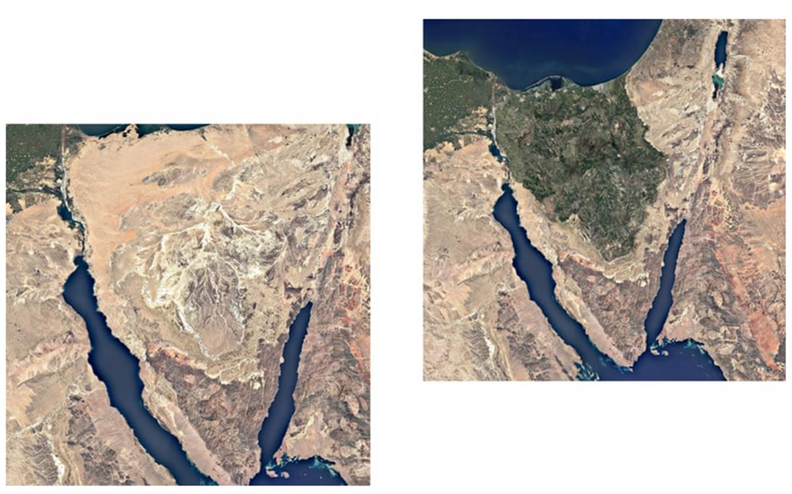
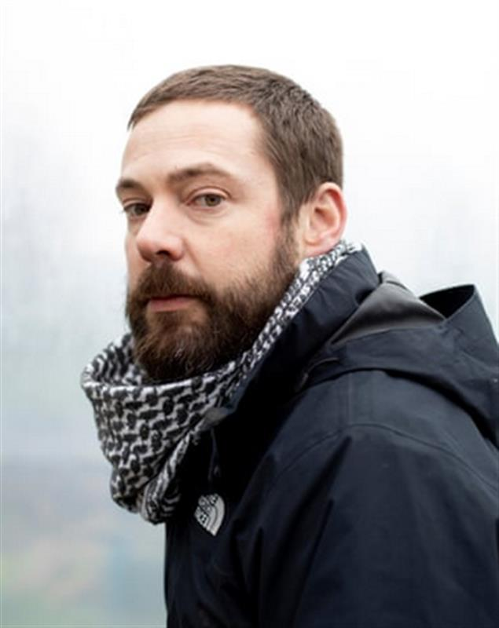
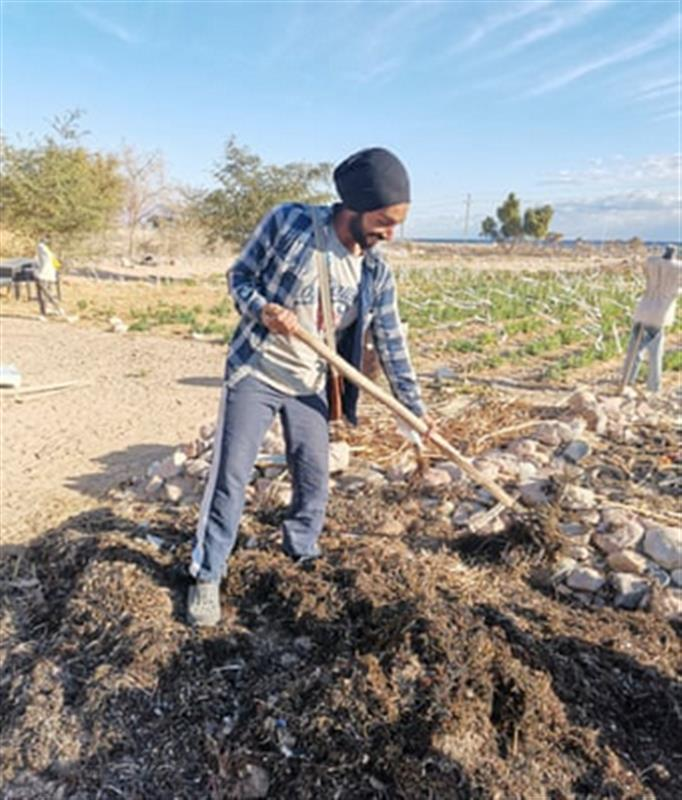

The Loess plateau, in China, in 2007, left, and transformed into green valleys and productive farmland in 2019. Composite: Rex/Shutterstock/Xinhua/Alamy
The Loess plateau, in China, in 2007, left, and transformed into green valleys and productive farmland in 2019. Composite: Rex/Shutterstock/Xinhua/Alamy
‘Our biggest challenge? Lack of imagination’: the scientists turning the desert green
In China, scientists have turned vast swathes of arid land into a lush oasis. Now a team of maverick engineers want to do the same to the Sinai
Sat 20 Mar 2021 12.00 GMT
Flying into Egypt in early February to make the most important presentation of his life, Ties van der Hoeven prepared by listening to the podcast 13 Minutes To The Moon – the story of how Nasa accomplished the lunar landings. The mission he was discussing with the Egyptian government was more earthbound in nature, but every bit as ambitious. It could even represent a giant leap for mankind.
Van der Hoeven is a co-founder of the Weather Makers, a Dutch firm of “holistic engineers” with a plan to regreen the Sinai peninsula – the small triangle of land that connects Egypt to Asia. Within a couple of decades, the Weather Makers believe, the Sinai could be transformed from a hot, dry, barren desert into a green haven teeming with life: forests, wetlands, farming land, wild flora and fauna. A regreened Sinai would alter local weather patterns and even change the direction of the winds, bringing more rain, the Weather Makers believe – hence their name.
“If anybody doubts that the Sinai can be regreened,” Van der Hoeven told the Egyptian delegates, an assortment of academics, representatives of ministers and military top brass, “then you have to understand that landing on the moon was once thought unrealistic. They didn’t lay out a full, detailed roadmap when they started, but they had the vision. And step by step they made it happen.”
Van der Hoeven is nothing if not persuasive. Voluble, energetic and down-to-earth, the 40-year-old engineer’s train of thought runs through disciplines from morphology to esoteric mysticism, often threatening to jump the tracks. But he is keenly focused on the future. “This world is ready for regenerative change,” he says. “It’s going to be a complete change of our behaviour as a species in the longer term. It is going to be a step as big as fire was for humanity.”
It became clear we had a massive opportunity. It wasn’t the solution to one problem; it was the solution to all the problems
It sounds impossibly far-fetched, but not only is the Weather Makers’ plan perfectly feasible, they insist, it is precisely the type of project humanity should be getting its head around right now. In recent years, discussion about the climate crisis has predominantly focused on fossil fuels and greenhouse gases; now, we’re coming to realise that the other side of that coin is protecting and replenishing the natural world. There is no better mechanism for removing carbon dioxide from the atmosphere than nature, but in the past 5,000 years, human activity has reduced the Earth’s total biomass by an estimated 50%, and destroyed or degraded 70% of the world’s forests. As UN secretary general António Guterres put it last year: “Human activities are at the root of our descent toward chaos. But that means human action can help to solve it.”
The Weather Makers know this very well: their origins are in dredging, one of the heaviest industries there is. Over the past few centuries, dredging has helped humans alter the face of the planet on ever-greater scales. Trained as a morphological engineer, Van der Hoeven has spent the past decade in the industry, working on projects across the world, including the artificial islands of Dubai, whose creation involved large-scale dredging and land reclamation. He got sucked into the expat lifestyle there, he admits: drinking, eating, partying, “I lost a little bit of my soul.” Returning to the Netherlands in 2008, he began to reexamine his own profession: “What I could see is that the dredging industry had so much potential; we were just misusing it.”
Working for the Belgian company Deme, he devised a new method of dredging that was both more eco-friendly and more efficient. He used inexpensive sensors to model maritime conditions in real time – waves, currents, tides – so as to determine more precisely where and when it was safe to work. Trialling the system, he won over sceptical colleagues by living on the vessel with them, even cooking meals. Head office was also convinced when his technique saved a small fortune.
In January 2016, Van der Hoeven was contacted by Deme’s Egyptian representative, Malik Boukebbous, who had been asked by the Egyptian government to look into restoring Lake Bardawil, a lagoon on the north coast of the Sinai. The lake was once 20 to 40 metres deep, but today is just a few metres deep. Dredging the lake and cutting channels to allow more water in from the Mediterranean would make it deeper, cooler and less salty – all of which would boost fish stocks.
But Van der Hoeven did not want to stop there. “If I feel I’m on the right track, it’s difficult for people to distract me,” he says. He began looking at the Sinai peninsula in more detail: its history, weather patterns, geology, tides, plant and animal life, even religious texts. He took himself off other projects and spent long hours in his apartment surrounded by charts, maps, books, sketched diagrams. “People were afraid for me because I was forgetting myself. My friends were cooking for me.” The deeper he looked, the more potential he saw.
There is evidence that the Sinai once was green – as recently as 4,500 to 8,000 years ago. Cave paintings found there depict trees and plants. Records in the 1,500-year-old Saint Catherine’s monastery, near Mount Sinai, tally harvests of wood. Satellite images reveal a network of rivers flowing from the mountains in the south towards the Mediterranean.

The Sinai peninsula today, and how it could look after regreening. Composite: The Weather Makers
What turned the Sinai into a desert was, most likely, human activity. Wherever they settle, humans tend to chop down trees and clear land. This loss of vegetation affects the land’s ability to retain moisture. Grazing animals trample and consume plants when they try to grow back. The soil loses its structure and is washed away – hence the silt in Lake Bardawil. Van der Hoeven calculated the lake contained about 2.5bn cubic metres of silt. If one were to restore the Sinai, this vast reserve of nutrient-rich material was exactly what would be needed. “It became clear we had a massive opportunity,” he says. “It wasn’t the solution to a single problem; it was the solution to all the problems.”
By this stage, Van der Hoeven and Deme agreed that he would be best off working as a separate entity, so in 2017 he founded the Weather Makers with two friends: Gijs Bosman and Maddie Akkermans. Both appear to be steadying influences. Bosman, a project manager at Dutch engineering firm Royal HaskoningDHV and a friend since student days, had the ability to translate Van der Hoeven’s grand vision into actionable technical detail. Akkermans has a background in finance and economics. “Ties said, ‘I’m too chaotic. So I can’t do this alone,’” she says. “Having someone like me who could tell him the truth and keep him on track gave him the confidence to start a company.”
They consulted with experts across disciplines, in particular a handful of veterans who have been ploughing the eco-restoration furrow for decades. Van der Hoeven calls them his “Jedi”. The first of these is John D Liu, a Chinese-American ecologist with a background in broadcasting. Restoring a landscape as large and as degraded as the Sinai sounds like science fiction, but it has been done before. While Van der Hoeven was immersed in his research, a friend implored him to watch a documentary called Green Gold, which Liu had made for Dutch television in 2012. It chronicles the story of the Loess plateau, an area of northern China almost the size of France. In 1994, Liu, who was working as a television journalist in Beijing, was asked by the World Bank to film the start of an ambitious restoration project, led by a pioneering Chinese scientist, Li Rui. At that time, the Loess plateau was much like the Sinai: a dry, barren, heavily eroded landscape. The soil was washing away and silting up the Yellow river. Farmers could barely grow any crops. The plan to restore it was huge in scale but relatively low tech: planting trees on the hilltops; terracing the steep slopes (by hand); adding organic material to the soil; controlling grazing animals; retaining water. The transformation has been astonishing. Within 20 years, the deserts of the Loess plateau became green valleys and productive farmland, as Green Gold documents. “I watched it 35 times in a row,” says Van der Hoeven. “Seeing that, I thought, ‘Let’s go for it!’”

Ties van der Hoeven: ‘If we want to do something about global warming, we have
to do something about deserts.’ Photograph: Judith Jockel/The Guardian
The Loess plateau project was also a turning point for Liu, he says – away from broadcasting and towards ecosystem restoration: “You start to see that everything is connected. It’s almost like you’re in the Matrix.” Despite his Jedi status, 68-year-old Liu is easygoing and conversational, more midwestern ex-hippy than cryptic Zen master. Since 2009, he has been an ambassador for Commonland, a Dutch nonprofit, and an adviser to Ecosystem Restoration Camps – a global network of hands-on, volunteer communities.
After watching Green Gold, the Weather Makers practically burst into Commonland’s Amsterdam headquarters to share their plans. “They were not going to be denied!” Liu recalls. “I said, ‘We have to work with these people, because this is the most audacious thesis I’ve ever seen.’”
Liu brought Van der Hoeven to China to see the Loess plateau first-hand. “To be in a place that had been essentially a desert where now it’s raining cats and dogs, and it’s not flooding, because it’s being infiltrated and retained in the system – it was all just so impressive to him.”
Through Liu, Van der Hoeven met another Jedi: Prof Millán Millán, a Spanish meteorologist. In the 1990s, Millán began investigating the disappearance of summer storms in eastern Spain for the European commission. “What I found is that the loss is directly linked to the building up of coastal areas,” he says. Rainfall in the region comes almost entirely from Mediterranean sea breezes. However, the breeze alone doesn’t carry enough water vapour to create a storm inland; it needs to pick up extra moisture, which it used to do from the marshes and wetlands along the coast. Over the past two centuries, however, these wetlands have been built on or converted to farming land. No additional moisture; no more storms. “Once you take too much vegetation out, it leads to desertification very quickly,” says Millán.
Such changes do not just affect the weather at a local level, Millán discovered: “The water vapour that doesn’t precipitate over the mountains goes back to the Mediterranean and accumulates in layers for about four or five days, and then it goes somewhere else: central Europe.” In other words, building on the Spanish coast was creating floods in Germany. Millán’s findings have gone largely unheeded by the European commission, he says. Now 79 and retired, he speaks with the gentle weariness of a long-ignored expert: “My criticism to them was: the old township barber would pull your teeth with pliers. It hurt, but it was effective. You’re still using those procedures, but you could save all your teeth.”
Millán’s research and Liu’s experience in the Loess plateau arrived at essentially the same conclusion. Chop down the trees, destroy the ecosystem, and the rains disappear; restore the ecosystem, make a wetter landscape, and the rains come back. Millán distilled his work down to a simple maxim: “Water begets water, soil is the womb, vegetation is the midwife.”
Desertification and climate change is happening so fast, we need action on the ground. Enough seminars, talks, talks, talks
Regreening the Sinai is to some extent a question of restarting that “water begets water” feedback loop. After restoring Lake Bardawil, the second phase is to expand and restore the wetlands around it so as to evaporate more moisture and increase biodiversity. The Sinai coast is already a major global crossing point for migratory birds; restored wetlands would encourage more birds, which would add fertility and new plant species.
When it comes to restoring inland areas of the Sinai, there is another challenge: fresh water. This is where another Jedi came into play: John Todd, a mild-mannered marine biologist and a pioneer in ecological design. In the 1970s, frustrated by the narrowness of academia, Todd established the New Alchemy Institute, an alternative research community in Massachusetts dedicated to sustainable living. One of his innovations was the “eco machine” – a low-tech installation consisting of clear-sided water barrels covered by a greenhouse.
“An eco machine is basically a living technology,” Todd explains. The principle is that water flows from one barrel to the next, and each barrel contains a mini ecosystem: algae, plants, bacteria, fungi, worms, insects, fish; like a series of manmade ponds. As the water flows, it becomes cleaner and cleaner. “You could design one that would treat toxic waste or sewage, or you could design one to grow food. They are solar-driven, and have within them a very large amount of biodiversity – in a sense, they reflect the aggregate experience of life on Earth over the last 3.5bn years.” In the Sinai, eco machines would be used to grow plants and to produce fresh water.
Last autumn, the Weather Makers built their own eco machine on a pig farm on the outskirts of the Dutch city of s’-Hertogenbosch, where they are based. For the first step in a plan to change the world, it is not exactly prepossessing. It looks like a standard agricultural polytunnel. On a cold, drizzly day, Weather Maker Pieter van Hout gives me a virtual tour. Inside the greenhouse are six clear-sided barrels filled with water of various shades of green and brown. In some of the tanks is leaf litter and dead plant material. Van Hout points out the brown algae growing on the sides: phytoplankton, the basis of the food web, which feeds life further up the chain: insects, snails and, in one tank, fish (in the Sinai these would be edible tilapia).
The Weather Makers, from left, in their eco machine: Eduardo Vias Torres, Pieter van Hout, Maarten Lanters, Ties van der Hoeven, Maddie Akkermans, Gijs Bosman, Mohammed Nawlo. Photograph: Judith Jockel/The Guardian
Some water evaporates from the barrels and condenses on the inside skin of the greenhouse, where it is collected by a system of gutters. Even on a cold day in the Netherlands, there is a constant trickle into a container on the ground. In the heat of the Sinai, the cycle would run much faster, says Van Hout. The water feeding the eco machine would be salt water, but the water that condenses inside would be fresh water, which can then be used to irrigate plants. If the structure is designed correctly, one would only need to drum on the outside to create an artificial “rain” inside. When the plants and the soil inside the greenhouse reach a certain maturity, they become self-sustaining. The greenhouse can then be removed and the process repeated in a different spot. “The idea is that you may have 100 of these structures,” says John Todd. “And they’re spending five years in one site and then they’re moved, so these little ecologies are left behind.”
In the Sinai, the sediment from Lake Bardawil would be pumped up to the hills, 50km inland, where it would then trickle back down through a network of eco machines. The saltiness of the sediment is actually an asset, says Van Hout, in that it has preserved all the nutrients. Flushing them through the eco machines will “reactivate” them. Around the water tanks, they are now testing to see which salt-tolerant plant species, or halophytes, grow best. Van Hout proudly points out a stack of white plastic tubs containing silt freshly scooped from the bottom of Lake Bardawil. “This is what ecosystem restoration looks like in real life,” he laughs, “buckets of very expensive mud.”
Estimates of how much difference a regreened Sinai could make are hard to quantify. In terms of carbon sequestration, it would doubtless be “billions of tons”, says Van der Hoeven. But such metrics are not always helpful: if you convert atmospheric carbon into, say, phytoplankton, what happens when a fish eats that phytoplankton? Or when a bigger fish eats that fish?
There are certain points in this world where, if we accumulate our joint energy, we can make a big difference
Another useful measure could be global temperature. In addition to sequestering carbon, green areas also help cool the planet. Deserts are heat producers, reflecting around 60% to 70% of the solar energy that falls on them straight back into the atmosphere. In areas covered by vegetation, much of that solar energy is instead used in evapotranspiration: the process of condensation and evaporation by which water moves between plants and the atmosphere. “If vegetation comes back, you increase cover, you reduce temperature, you reduce solar reflection, you start creating a stable climate,” says Van der Hoeven. “If we want to do something about global warming, we have to do something about deserts.”
At present, the hot Sinai acts as a “vacuum cleaner”, drawing moist air from the Mediterranean and funnelling it towards the Indian Ocean. A cooler Sinai would mean less of that moisture being “lost”. Instead, it would fall as rain across the Middle East and north Africa, thus boosting the entire region’s natural potential. Van der Hoeven describes the Sinai peninsula as an “acupuncture point”: “There are certain points in this world where, if we accumulate our joint energy, we can make a big difference.”
The Sinai is also an acupuncture point geopolitically, however. Post-Arab spring, the region has become a battle zone between Egyptian security forces and Islamist insurgents. There have been numerous terrorist incidents: the bombing of a Russian airliner in 2015 killed 224 people; an attack on a Sufi mosque in 2017 killed more than 300 worshippers. Northern Sinai is currently a no-go area to outsiders, controlled by the military, and plagued by poverty, terrorism and human rights abuses. Since 2018 the military has restricted access to Lake Bardawil for local fishermen to just a few months a year, says Ahmed Salem, founder of the UK-based Sinai Foundation for Human Rights. “There’s a lot of suffering,” he says, “because they don’t have any other way to earn money and feed their families.” A restored landscape would bring tangible benefits to locals, says Salem, but it all depends on the president, Abdel Fatah al-Sisi. “If Sisi really wants to help them [the Weather Makers], it will be OK for them because he’s like a god in Egypt. But if he doesn’t, they will fail.”
But the Sisi government seems to have recognised that ecosystem regeneration could fix many problems at once: food security, poverty, political stability, climate goals, as well as the potential for a green project of international renown. The government is close to signing contracts for the first phase of the restoration plan, which covers the dredging of Lake Bardawil. Subsequent phases may well require financial support from external bodies such as the EU.
As outsiders, the Weather Makers are aware their plan will require local support, cooperation and labour. Because of the military restrictions, none of them has visited Lake Bardawil, although they have forged links with an organic farm in southern Sinai named Habiba. Habiba was established in 1994, by Maged El Said, a charismatic, Cairo-born tour operator who fell in love with the region. Originally it was a beach resort, but in 2007 El Said branched into organic farming, and Habiba now connects other farms, local Bedouin tribes and academic institutions.

The Weather Makers have forged links with Habiba organic farm in southern Sinai.
Photograph: Courtesy of Maged El Said
El Said has some reservations about the Weather Makers’ plan: “It’s a big shiny project, but also you’re drastically changing the environment, the flora and fauna. I don’t know if there will be side-effects.” But in terms of the larger mission, they are very much aligned: “We are all in the same boat. Desertification and climate change is happening so fast, so we need action on the ground. Enough of workshops, enough seminars, talks, talks, talks.”
On a global level, the tide is turning in the Weather Makers’ direction. Discussions about regreening, reforestation and rewilding have been growing in volume and urgency, boosted by high-profile advocates such as Greta Thunberg, David Attenborough and British ecologist Thomas Crowther, who made headlines in 2019 with research suggesting the climate crisis could be solved by planting 1tn trees (he later acknowledged it was not quite that simple).
This year marks the beginning of the United Nations Decade on Ecosystem Restoration, “a rallying call for the protection and revival of ecosystems around the world”. The UN hopes to restore 350m hectares of land by 2030, which could remove an additional 13 to 26 gigatons of carbon from the atmosphere. After decades of compartmentalising environmental issues and missing its own targets, the UN, too, has come to realise that the only viable solution is to do it all at once. It particularly wants to rally younger people to the cause; its social media campaigns carry a “generation restoration” hashtag. “Ecosystem restoration is not a technical challenge; it’s a social challenge,” says Tim Christophersen, head of the Nature for Climate branch at the UN Environment Programme.
Nations and corporations are also making ever more ambitious commitments to regreening, even if they are struggling to live up to them. The UK, for example, plans to create 30,000 hectares of woodland a year by 2025. India has pledged to restore 26m hectares of degraded land by 2030. Africa’s Great Green Wall, “the world’s largest ecosystem restoration project”, aims to plant an 8,000km line of trees across the Sahara Desert, from Senegal to Djibouti (14 years on, it is only around 15% complete). Meanwhile, green companies are taking root, such as Ecosia, the Berlin-based search engine, which to date has planted more than 120m trees around the world.
“The main challenge,” Christophersen says, “is the lack of human imagination; our inability to see a different future because we’re staring down this dystopian path of pandemic, climate change, biodiversity loss. But the collective awareness that we are in this together is a huge opportunity. People don’t have a problem imagining what a four-lane highway would look like. But to imagine a restored landscape of over a million hectares – nobody knows what that would look like because it hasn’t really been done before.”
Van der Hoeven would agree. He cites Yuval Noah Hariri’s book Sapiens, which argues that humans prevailed because of our ability to share information, ideas, stories: “We were able to believe in a myth – in something which was not there yet.”
Regreening the Sinai is presently little more than a myth, just as the Apollo missions once were; but it now exists in the imagination, as a signpost for the future we aspire to. The more it is shared, the more likely it is to happen. It could come to be a turning point – an acupuncture point: “We’re not going to change humanity by saying, ‘Everything has to be less,’” says Van der Hoeven. “No, we have to do more of the good things. Why don’t we come together and do something in a positive way?”
SOURCE: THE GUARDIAN